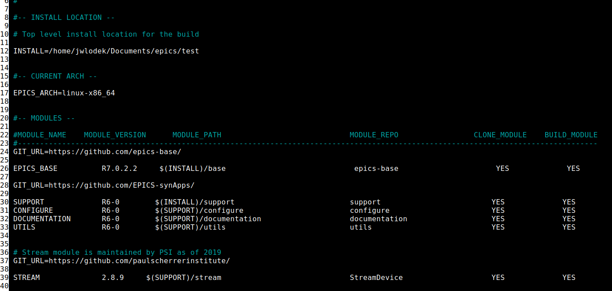
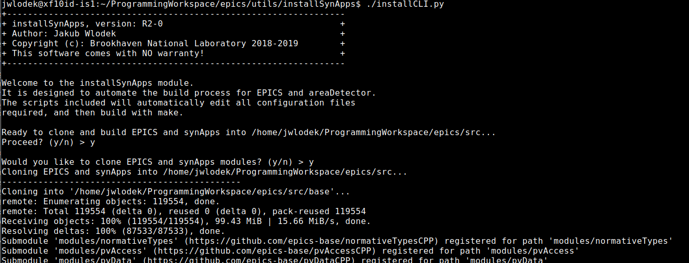
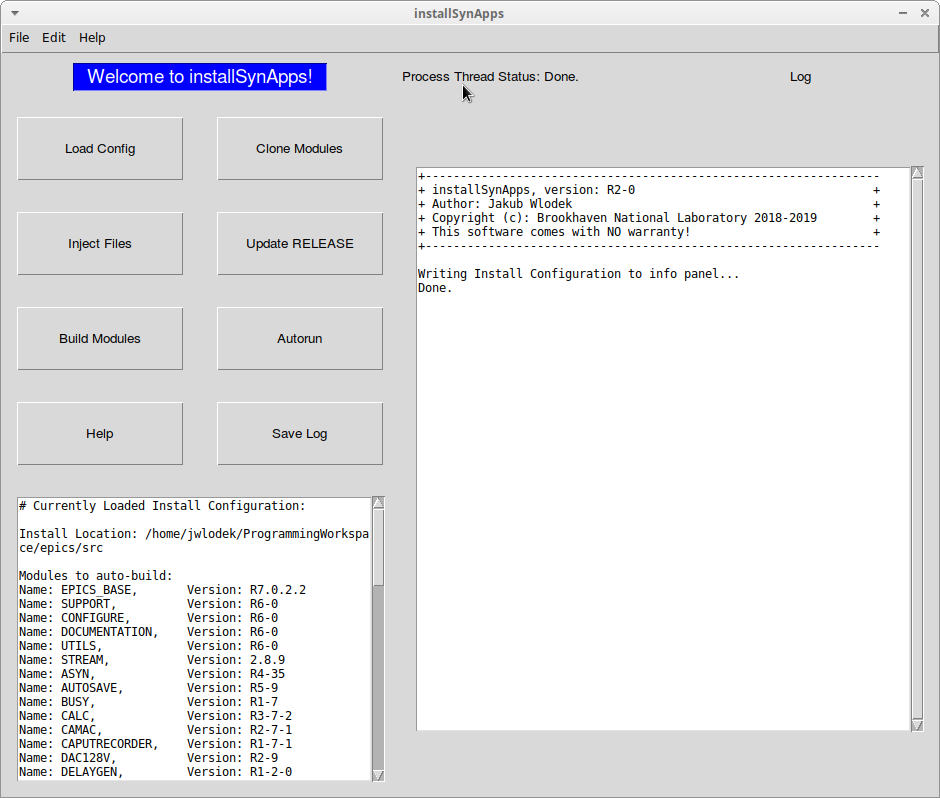
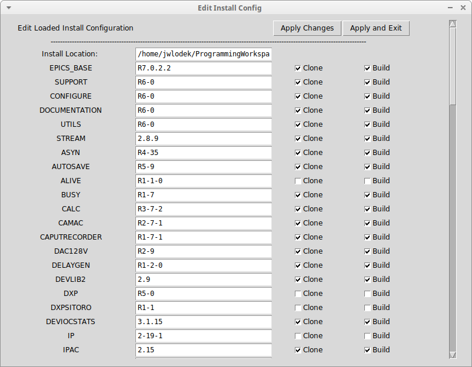
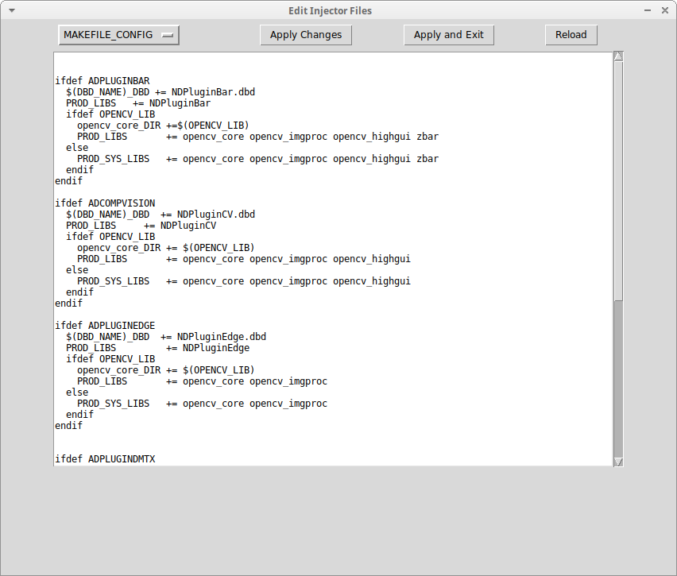
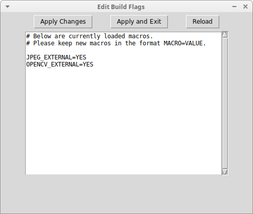

installSynApps is a python3 module that allows users to clone and build EPICS and synApps with a modular configuration system. Configuration options for building are automatically handled by the module, greatly simplifying the process for users unfamiliar with the EPICS build environment. The module is capable of injecting configuration options into target files as well, which is useful when external modules are being compiled that do not have the appropriate Makefile options within EPICS. installSynApps also allows for auto setting of build flags, which further simplifies the process of compiling EPICS base, synApps, and areaDetector.
To install the installSynApps module, you may either clone the git repository, or download a release. From there, make sure that it is unpacked if it was downloaded as a tarfile or zip archive.
installSynApps requires that several external programs be installed and in the system path in order to run. Firstly, it requires python3, and if using the GUI
version, Tkinter. On windows, python3 (which should include Tkinter) can be downloaded from the python website.
On linux, you may also use the website, or simply use the package manager, running the sudo apt install python3 python3-tk command. The minimum supported python version
is 3.4+, and on linux distributions that have an older version in their package repositories it is required to download one from an external source and use it in a virtual env.
Next, installSynApps
requires git, wget, and tar in order to download and unpack the entirety of EPICS and synApps. On linux, simply install these packages through the package manager:
sudo apt install git wget tar. On windows, you may find wget here, and git and tar can be
downloaded from the git website. When installing git, you will have the option to place git in your system path, which you
should enable, and an option to install "UNIX tools", which will include tar. Finally, installSynApps requires make, perl, and a C/C++ compiler in order to actually build
EPICS. On linux, install these by simply running sudo apt install make gcc g++ perl. On windows, it is recommended to use the MinGW version of make, which can be found
here, Strawberry perl can be found here, and the recommended C/C++ compiler is a recent version
of the MSVC/MSVC++ compiler included with Visual Studio. Install all of these packages, and installSynApps is now ready for use.
On Windows, prior to running installSynApps, it is required to set up your build environment. First, all of the above described required packages must be in your system path. You
may test this by opening a command prompt and typing make, perl, git, tar, and wget. If the output describes the usage
of each module, it is correctly placed in the system path. If the message states that it is not a recognized program or batch file, check to make sure it was added to the path. Then, to
initialize a Visual Studio build environment, in the command prompt, navigate to the Visual Studio intall directory (usually C:\Program Files (x86)), and follow this path:
"C:\Program Files (x86)\Microsoft Visual Studio\2017\Community\VC\Auxiliary\Build\" replacing 2017 for your version of Visual Studio. Once in this directory, run the following command:
vcvarsall.bat x86_amd64. This will set up your command prompt for buildng C/C++ applications with MSVC++ for 64bit windows. Next, run set EPICS_HOST_ARCH=windows-x64-static,
and set MAKEFLAGS=-w. This will set some environment variables needed for the build. Once this is done, navigate to the installSynApps directory, and proceed as described below.
The most important file for configuring your installation of EPICS, synApps, and areaDetector is the configure/INSTALL_CONFIG file:

In this file, you will find defined your INSTALL location. INSTALL represents where installSynApps will clone all of its modules.
Below this are the modules themselves, along with GIT_URL and WGET_URL definitions. Each module has a name, version, relative path, repository name,
and options to clone/build/package it. installSynApps will locate the module at the most recently listed URL appended with the repository, and will use git clone if it is a GIT_URL, or wget if it is
a WGET_URL. Simply edit the version numbers and the CLONE/BUILD options as demonstrated in the image above to edit your install configuration. In addition, you may edit the INSTALL variable above to
customize the install location. Note that all of these options may be customized through the GUI if using installGUI rather than installCLI.
One way to run installSynApps is to use the installCLI.py script. On linux this is done by running ./installCLI.py, and on windows: python installCLI.py.

Once the script is run, it will begin execution. Simply follow the instructions as they come up. You may be prompted to enter your sudo password if running on linux to install dependency packages.
Simply enter 'y' when prompted to continue, or 'n' to skip the next step. The script will ask before starting each stage of the build process so if you wish to skip certain portions, simply select 'n'.
installCLI also supports several optional flags as arguments. The '-h' flag will explain the remaining flags. The -y flag will simply automatically answer 'y' to each of the queries, and the '-c CONFIG PATH'
flag allows for selecting a different configure directory than the default configure/. The default configure folder is tailored to linux installations, and thus when building for windows it is recommended to
use the '-c' flag and point to addtlConfDirs/configureWindows.
The recommended way to use installSynApps is to use installGUI. To start it, in the terminal that has been configured with the proper build environment, run ./installGUI.py on linux, and
python installGUI.py on windows. Note that it must be started from the terminal with the proper build environment, as installSynApps uses terminal utilities via the python 'subprocess' module
to compile EPICS and synApps. Once it is run, you will see the following screen:

On the bottom left, you will see the currently loaded install configuration. On the right you will see the log which will show information regarding the clone and build. By default info, warning, and error messages
are only written to the log, though popups can be Toggled by entering Edit -> Toggle Popups. On the upper-right, you will see the 8 main control buttons.
In order to load a new Install configuration, click the 'Load Config' button, or select 'File -> Open'. Then select the directory containing a valid install configuration. Note that if it is not valid, the currently loaded
install config will remain the same. Once a config is loaded, you may edit it by entering the Edit menu and selecting an appropriate option. 'Edit -> Edit Config' will open a window that allows for selecting the install
location, which module versions are selected, and whether or not the modules should be cloned and or built.

Simply edit whatever you wish and select either apply or apply and exit. You can see the panel displaying the currently loaded install config has been updated to reflect your changes. The 'Edit -> Edit Injector Files'
option will open a screen that displays the injector files that will be applied to your build process. Selecting each one from the dropdown will show which file the text will be injected into. You may simply edit these
in the given window, and press apply changes. If you wish to reload what it had been previously, provided you have not applied your changes, you may select 'Reload'.

Finally, selecting 'Edit -> Edit Build Flags' will open a window that will allow you to set macro values that will be applied to the areaDetector bulid. Simply follow the MACRO=VALUE standard as demonstrated.

Once you are satisfied with your loaded configuration it may be wise to save it with 'File -> Save As', and then it can be applied using either 'Autorun' to run all processes sequentially, or individually by
pressing each of the appropriate buttons. The log will output status messages, and any further instructions. buttons
Features Added
Bug Fixes/Improvements
Future Plans
Features Added
Bug Fixes
Future Plans
Features Added
initIOCs to separate moduleBug Fixes
Future Plans
ioc_deployFeatures Added
Limitations:
Copyright (c): Brookhaven National Laboratory as a part of Brookhaven Science Associates 2018 - 2019
Important Links: